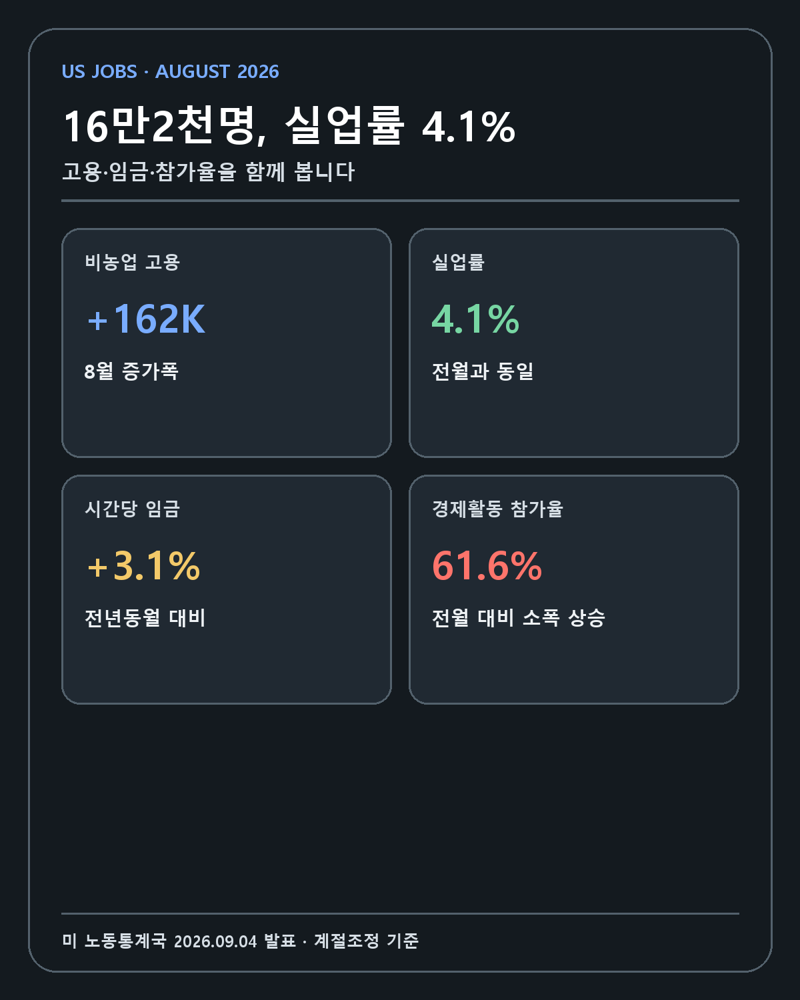
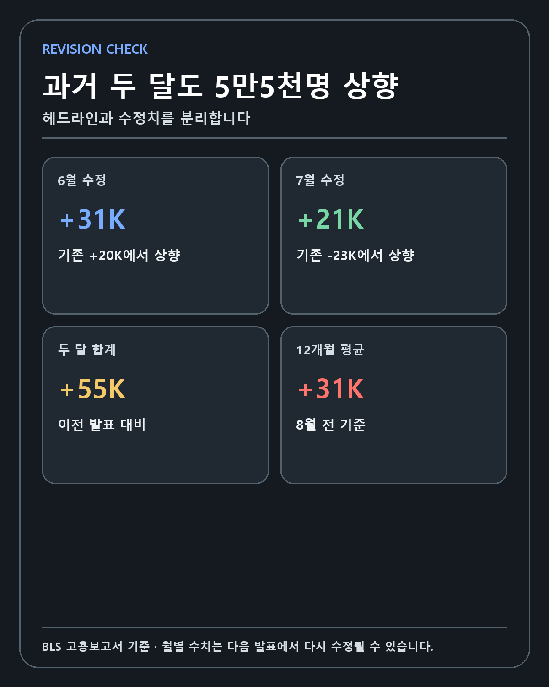
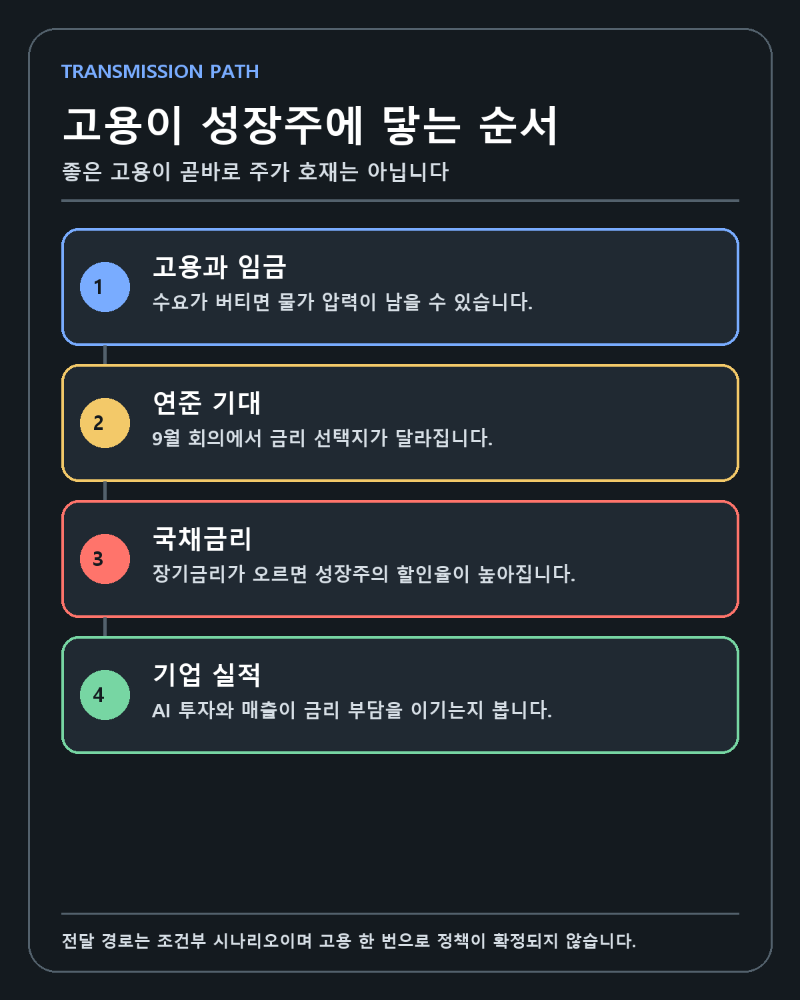
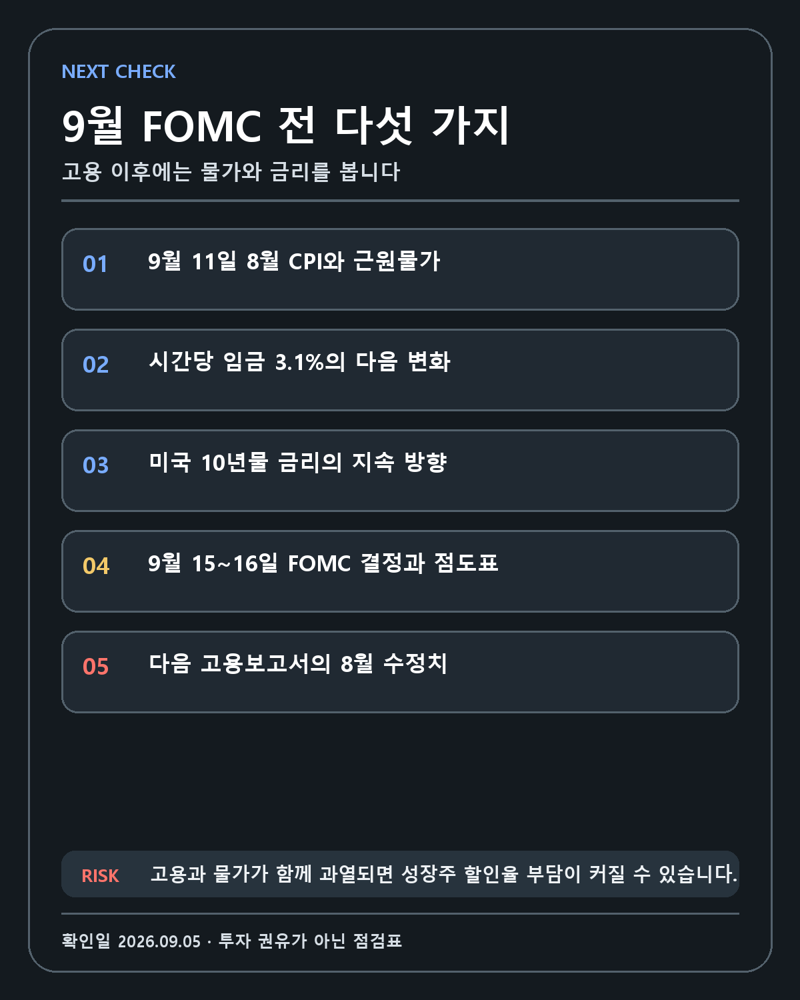

US LABOR · DEEP RESEARCH
2026년 8월 미국 고용보고서 해부: 16만2천명 증가가 금리와 성장주에 전달되는 조건
예상보다 강한 고용은 소비와 기업 수요를 지지하면서도 금리와 성장주 할인율을 높일 수 있습니다. 헤드라인, 수정치, 산업 구성과 다음 물가를 분리합니다.
FIVE-LINE ANSWER
2026년 8월 비농업 고용은 16만2천명 증가했고 실업률은 4.1%였습니다. 6월과 7월 고용은 합계 5만5천명 상향 수정됐습니다. 일자리 증가의 약 62%는 음식서비스와 지방정부 교육에 집중됐습니다. 강한 고용은 경기 수요를 지지하지만 임금·물가·국채금리를 통해 성장주 할인율을 높일 수도 있습니다. 9월 11일 CPI와 15~16일 FOMC를 함께 확인해야 합니다.
검증 기준일: 2026년 9월 5일 KST
작성자 관점: AI·반도체·우주·바이오 성장기업을 장기 보유하는 개인 투자자의 데이터 복기
이 보고서가 답하려는 질문
2026년 9월 4일 미국 노동통계국(BLS)이 발표한 8월 고용보고서는 금융시장의 예상보다 훨씬 강했습니다. 비농업 고용은 16만2천명 늘었고 실업률은 4.1%를 유지했습니다. 시간당 평균임금은 전월 대비 0.3%, 전년 동월 대비 3.1% 상승했습니다. 발표 전 시장 전망은 집계기관에 따라 대략 5만3천~6만5천명에 형성돼 있었습니다.
표면적인 해석은 간단합니다. 미국 노동시장이 여전히 버티고 있으며, 연준은 경기 약화를 이유로 서둘러 정책을 완화할 필요가 줄었습니다. 그러나 성장주 투자자가 실제로 필요한 판단은 그보다 복잡합니다. 고용 증가는 소비와 기업 매출을 떠받치지만, 임금과 물가 압력을 오래 유지해 할인율을 끌어올릴 수도 있습니다. 같은 고용 결과가 현금흐름이 큰 대형 기술주에는 수요 신호가 되고, 장기간 자금조달이 필요한 초기 성장기업에는 금리 부담이 될 수 있습니다.
이 글은 강한 고용은 주식에 호재인가 악재인가라는 이분법 대신 네 가지 질문을 풀어갑니다.
- 16만2천명이라는 헤드라인은 어떤 조사에서 나왔으며 무엇을 포함합니까?
- 실업률·참가율·임금·산업별 고용은 같은 방향을 가리킵니까?
- 고용 결과는 9월 FOMC와 국채금리에 어떤 경로로 전달될 수 있습니까?
- AI·반도체·우주·바이오 기업을 판단할 때 무엇을 기업 고유 증거로 남겨야 합니까?
FACT 1 — 사업체 조사와 가계 조사는 서로 다른 질문을 측정합니다
BLS 8월 고용보고서 원문은 두 개의 대규모 월간 조사를 묶어 발표합니다. 사업체 조사는 기업과 정부기관의 급여대장을 바탕으로 비농업 고용, 산업별 일자리, 근로시간과 임금을 추정합니다. 가계 조사는 개인의 취업·실업 여부와 경제활동 참가 상태를 측정합니다. 비농업 고용 16만2천명은 사업체 조사에서, 실업률 4.1%는 가계 조사에서 나옵니다.
두 조사 결과가 매달 완전히 같은 방향으로 움직이지 않는 이유입니다. 표본과 모집단, 자영업 포함 여부와 추정 방식이 다릅니다. 투자자는 비농업 고용만 보고 노동시장 전체가 강해졌다고 결론 내리기 전에 실업률, 참가율과 고용률을 같이 읽어야 합니다.
| 지표 | 2026년 8월 결과 | 무엇을 측정하는가 | 주의할 점 |
|---|---|---|---|
| 비농업 고용 | +162,000명 | 사업체 급여대장의 일자리 변화 | 사람 수와 일자리 수는 동일하지 않습니다 |
| 실업률 | 4.1% | 구직 중인 경제활동인구의 비율 | 참가율 변화의 영향을 받습니다 |
| 실업자 수 | 약 700만명 | 일할 수 있고 적극적으로 구직한 사람 | 구직하지 않으면 실업자로 집계되지 않습니다 |
| 경제활동 참가율 | 61.6% | 취업자와 실업자가 성인 인구에서 차지하는 비중 | 2026년 1월보다 0.5%포인트 낮습니다 |
| 고용률 | 59.1% | 성인 인구 중 취업자의 비중 | 인구구조와 함께 봐야 합니다 |
참가율은 전월보다 소폭 올랐지만 1월 이후로는 0.5%포인트 낮습니다. 실업률이 4.1%로 안정됐다는 사실만으로 노동 공급 문제가 해소됐다고 보기는 어렵습니다. 구직을 포기하거나 당장 일할 수 없는 사람은 실업자에서 빠지기 때문입니다.
가계 조사에서 경제적 이유로 시간제 근무를 한 사람은 41만4천명 감소한 440만명이었습니다. 정규직을 원하지만 근무시간이 줄었거나 정규직을 찾지 못한 사람들입니다. 이 감소는 고용의 질을 볼 때 긍정적인 단서입니다. 다만 계절조정 월간 수치는 변동성이 크므로 몇 달 연속 확인해야 추세라고 부를 수 있습니다.

FACT 2 — 8월만 강했던 것이 아니라 과거 두 달도 상향됐습니다
고용보고서의 초기 발표는 최종값이 아닙니다. BLS는 기업의 추가 응답과 계절조정 재계산을 반영해 이전 두 달을 수정합니다. 이번 발표에서 6월 비농업 고용은 2만명 증가에서 3만1천명 증가로 바뀌었습니다. 7월은 2만3천명 감소에서 2만1천명 증가로 수정됐습니다. 합계 상향폭은 5만5천명입니다.
| 기준월 | 이전 발표 | 이번 수정 | 수정폭 |
|---|---|---|---|
| 2026년 6월 | +20,000명 | +31,000명 | +11,000명 |
| 2026년 7월 | -23,000명 | +21,000명 | +44,000명 |
| 합계 | -3,000명 | +52,000명 | +55,000명 |
수정치가 중요한 이유는 투자자가 노동시장 추세를 보는 출발점을 바꾸기 때문입니다. 7월이 순감소였다는 이전 그림에서는 고용 둔화가 빠르게 진행되는 듯 보였습니다. 7월이 소폭 증가로 바뀌고 8월이 16만2천명 늘면서, 적어도 여름 두 달의 궤적은 처음 알려진 것보다 강해졌습니다.
반대 논리도 남아 있습니다. BLS는 8월 이전 12개월의 월평균 고용 증가가 3만1천명이었다고 밝혔습니다. 8월은 이 평균을 크게 웃돌지만 한 달의 반등입니다. 다음 보고서에서 8월 수치가 크게 내려가거나 9월 증가폭이 다시 약해지면 추세 전환 판단은 무효화됩니다. 고용보고서를 읽을 때는 초기 숫자보다 2–3개월 이동 경로와 수정 방향을 기록하는 편이 안전합니다.

FACT 3 — 증가한 일자리의 62%가 두 부문에 집중됐습니다
산업별 구성은 총량의 질을 보여 줍니다. 음식서비스와 주점 부문은 5만9천명, 지방정부 교육은 4만2천명 증가했습니다. 두 부문을 합치면 10만1천명으로 전체 증가 16만2천명의 약 62%입니다. 제조업은 1만6천명, 보건의료는 1만3천명 늘었습니다. 건설업은 2만2천명 증가했지만 BLS는 통계적으로 큰 변화가 없었다고 분류했습니다.
정보산업은 2만3천명 감소했습니다. 세부적으로 컴퓨팅 인프라 제공자·데이터 처리·웹호스팅에서 8천명, 출판에서 7천명, 방송·콘텐츠 제공에서 5천명이 줄었습니다. AI 투자 확대와 정보산업 고용 감소가 같은 달에 나타날 수 있다는 뜻입니다.
이 조합을 두 가지로 읽을 수 있습니다. 첫째, 서비스 수요와 학교 개학 관련 채용이 총고용을 크게 끌어올렸으므로 노동시장 전반의 균일한 확장으로 과장하면 안 됩니다. 둘째, 정보산업 고용 감소가 곧 AI 산업 수요 붕괴를 뜻하지도 않습니다. 자동화, 조직 재편, 생산성 향상, 기업별 비용 절감과 직무 이동이 동시에 일어날 수 있습니다.
AI 투자자로서 저는 이 지점을 중요하게 봅니다. AI 기업의 장기 가치는 직원 수 증가 자체보다 고객이 더 많은 업무를 소프트웨어와 컴퓨팅에 옮기며 생산성을 높이는 데서 나옵니다. 반대로 정보산업의 고용 축소가 고객 예산 감소와 신규 계약 둔화로 이어진다면 실적에 나타날 것입니다. 고용보고서는 질문을 만들지만 엔비디아 데이터센터 매출이나 팔란티어 계약, 마이크론 HBM 수요를 대신 측정하지는 않습니다.
FACT 4 — 임금은 전월 0.3%, 전년 3.1% 올랐습니다
민간 비농업 근로자의 시간당 평균임금은 10센트 오른 37.75달러였습니다. 전월 대비 0.3%, 전년 동월 대비 3.1% 증가입니다. 생산직과 비관리직 근로자의 평균임금은 32.53달러로 전월보다 11센트 올랐습니다. 전체 근로자의 평균 주당 근로시간은 34.4시간으로 0.1시간 늘었습니다.
임금이 중요하다는 말은 임금 상승이 나쁘다는 뜻이 아닙니다. 가계 소득이 늘면 소비와 기업 매출을 지지합니다. 문제는 생산성보다 임금이 빠르게 오르고 기업이 비용을 가격에 전가할 때입니다. 서비스 물가가 높게 유지되면 연준은 인플레이션이 목표로 돌아갈 확신을 얻기 어렵습니다.
전년 대비 임금 3.1%와 소비자물가 상승률을 직접 빼서 모든 노동자의 실질임금 변화를 계산하는 것도 조심해야 합니다. 두 통계의 구성과 가중치가 다르고 개인별 소비구조도 다릅니다. AP는 8월 소비자물가가 전년 대비 3.4%였다고 보도했지만, 이는 평균적인 구매력 판단의 참고값입니다. 고용보고서의 명목임금만으로 가계가 모두 더 부유해졌다고 단정하지 않습니다.
시장 예상과 실제를 비교할 때 생기는 오류
이번 고용 결과는 예상 대비 서프라이즈로 불렸습니다. Axios 집계는 약 5만3천명, FactSet을 인용한 AP 보도는 6만5천명을 예상치로 제시했습니다. 공식 예상치가 두 개라는 뜻이 아닙니다. 민간 이코노미스트 표본과 집계 시점이 달라 컨센서스가 달라진 것입니다.
따라서 보고서에는 시장 예상 약 5만3천~6만5천명을 웃돌았다고 범위를 밝히는 것이 정확합니다. 16만2천명이 어느 예상치의 정확히 세 배라고 강조하면 클릭은 쉬워도 기준이 바뀝니다. 예상보다 강했다는 방향은 확실하지만 배수 표현은 집계기관을 함께 밝혀야 합니다.
발표 직후 금융시장 반응도 시점에 따라 달라집니다. AP가 미 동부시간 오전 10시5분에 기록한 장중 스냅샷에서는 S&P 500 -0.1%, 다우 -0.4%, 나스닥 +0.1%였습니다. 엔비디아는 +2.5%, 마이크론은 +4.1%였습니다. 채권금리는 올랐습니다. 이 자료는 종가가 아니며 고용 외에 기업 뉴스와 포지셔닝이 섞여 있습니다. 주가와 뉴스가 동시에 움직였다고 해서 고용이 모든 주문의 원인이라고 단정할 수 없습니다.

고용에서 성장주까지 이어지는 네 단계
고용보고서가 성장주의 가치에 영향을 주는 기본 경로는 고용·임금 → 물가 기대 → 연준 정책 기대 → 국채금리와 할인율입니다. 고용이 강하고 임금 압력이 높으면 시장은 연준이 높은 금리를 더 오래 유지하거나 추가 인상을 검토할 확률을 높일 수 있습니다. 장기금리가 오르면 먼 미래에 발생할 현금흐름의 현재가치가 줄어듭니다.
그러나 같은 보고서에는 고용·임금 → 소득과 소비 → 기업 매출이라는 두 번째 경로가 있습니다. 경기 침체가 오지 않고 기업이 채용을 이어 가면 클라우드, 광고, 소프트웨어, 데이터센터 투자와 소비 수요가 버틸 수 있습니다. 성장주의 분자는 기업 실적이고 분모는 할인율입니다. 강한 고용은 분자와 분모를 동시에 움직입니다.
| 전달 단계 | 강한 고용이 만드는 가능성 | 반대 조건 |
|---|---|---|
| 가계 소득 | 소비와 서비스 수요 유지 | 물가가 임금보다 빠르면 구매력 약화 |
| 기업 매출 | 경기민감 매출과 IT 예산 방어 | 고용 증가가 일부 산업에만 집중될 수 있음 |
| 연준 기대 | 완화 필요성 감소, 긴축 선택지 유지 | 물가가 빠르게 둔화하면 고용만으로 인상하지 않을 수 있음 |
| 국채금리 | 성장주 할인율 상승 가능 | 안전자산 수요와 글로벌 자금 흐름이 반대로 움직일 수 있음 |
| 기업가치 | 실적 성장과 금리 부담의 경쟁 | 기업별 현금흐름·밸류에이션이 결과를 가름 |
9월 FOMC 전 남은 증거
연방준비제도의 공식 FOMC 달력에 따르면 다음 회의는 9월 15–16일이며 경제전망과 점도표가 함께 공개되는 회의입니다. BLS 일정상 9월 11일에는 8월 소비자물가지수와 실질임금이 발표됩니다.
고용이 예상보다 강해진 지금, 9월 FOMC 판단의 다음 핵심은 물가입니다. CPI가 낮아지고 근원 서비스 물가도 둔화하면 연준은 노동시장의 탄력을 경기 침체 방어력으로 볼 수 있습니다. 반대로 고용과 물가가 동시에 강하면 긴축 경로가 더 높아질 수 있습니다.
연준 결정은 한 통계에 자동 반응하는 규칙이 아닙니다. 정책위원들은 고용, 물가, 기대인플레이션, 금융여건과 국제 위험을 함께 봅니다. 16만2천명은 중요한 입력이지만 결정 그 자체는 아닙니다. 점도표의 중간값과 기자회견에서 향후 조건이 어떻게 설명되는지 확인해야 합니다.
포트폴리오에 적용하는 세 시나리오
강세 시나리오
고용은 완만하게 유지되고 CPI와 근원물가가 둔화합니다. 10년물 금리가 안정되고 연준이 추가 긴축을 서두르지 않습니다. 경기 수요와 할인율이 동시에 우호적이면 엔비디아·브로드컴·마이크론의 AI 인프라 매출, 팔란티어·알파벳의 소프트웨어와 광고 수요가 실적 차별화를 만들 수 있습니다.
기준 시나리오
고용은 강하지만 물가가 혼재하고 국채금리가 높은 범위에서 움직입니다. 지수의 밸류에이션 확장보다 기업별 매출 성장과 현금흐름이 중요해집니다. 현재 이익을 내는 대형 기술주와 자금조달이 필요한 초기 성장주 사이의 가격 차이가 커질 수 있습니다. 월급날 정기 투자는 유지하되 기대수익률과 매수 가격을 더 엄격히 봅니다.
약세 시나리오
고용과 임금, 물가가 함께 재가속하고 연준의 정책 경로가 높아집니다. 장기금리 상승이 이어지면 우주·바이오·자율주행처럼 현금흐름이 먼 기업의 자본비용이 커집니다. 다른 약세 경로도 있습니다. 고용이 다음 달 급락해 금리가 내려가더라도 기업 매출과 투자 예산이 꺾이면 나쁜 뉴스가 주식 호재라는 공식은 작동하지 않을 수 있습니다.
작성자의 판단
제 투자 기준은 기술, 해자, 창업자, 성장률, 현금흐름 순서입니다. 고용과 금리는 기업의 가격을 움직이지만 기술 경쟁력의 유무를 대신 판단하지 못합니다. 8월 고용이 강하다는 이유만으로 엔비디아나 팔란티어의 보유 논리를 바꾸지 않습니다. 동시에 금리가 높아질 가능성을 무시하고 미래 성장만으로 어떤 가격도 정당화하지 않습니다.
보유 기업을 볼 때 이번 고용보고서에서 가져갈 질문은 다음과 같습니다.
- 고객의 AI 예산과 데이터센터 투자가 실제로 유지됩니까?
- 높은 금리에서도 영업현금흐름과 잉여현금흐름이 늘어납니까?
- 아직 적자인 기업은 다음 자금조달 전까지 충분한 현금을 보유합니까?
- 주식보상과 증자가 회사 성장보다 빠르게 주당가치를 희석하지 않습니까?
- 산업 고용 감소가 비용 효율화인지 고객 수요 둔화인지 실적에서 확인됩니까?

무효화 조건과 다음 체크리스트
현재 해석은 노동시장이 7월에 알려진 것보다 강하고 8월에 반등했다입니다. 다음 조건이 나오면 이 해석을 낮춰야 합니다.
- 다음 고용보고서에서 8월 증가폭이 대규모 하향 수정됩니다.
- 9월 고용이 다시 감소하고 실업률과 장기실업이 함께 상승합니다.
- 참가율 하락으로 실업률만 낮게 유지됩니다.
- 음식서비스·정부 교육을 제외한 민간 고용이 광범위하게 약해집니다.
- 임금 둔화가 소비와 기업 매출 급감으로 이어집니다.
반대로 고용의 강함이 성장주에 불리하다는 해석도 CPI 둔화와 장기금리 안정이 확인되면 약해집니다. 정책과 시장은 조건에 따라 달라집니다. 숫자를 방향 예측에 맞추기보다 무엇이 확인되면 판단을 바꿀지 먼저 적는 이유입니다.
결론
2026년 8월 미국 비농업 고용은 16만2천명 증가했고 실업률은 4.1%였습니다. 6월과 7월은 합계 5만5천명 상향 수정됐습니다. 노동시장은 이전 발표가 보여 준 것보다 강했습니다. 그러나 일자리 증가는 음식서비스와 지방정부 교육에 집중됐고 정보산업은 감소했습니다. 임금은 전년 대비 3.1% 올랐으며 참가율은 61.6%였습니다.
이 보고서 하나로 9월 FOMC 결정이나 성장주 방향을 확정할 수 없습니다. 9월 11일 CPI, 국채금리의 지속 방향, 9월 15–16일 FOMC의 점도표와 다음 고용 수정치를 함께 봐야 합니다. 제 포트폴리오에서는 금리 변화와 기업의 기술·수요·현금흐름을 분리해 추적하겠습니다.
이 글은 작성자의 개인적인 투자 조사와 기록입니다. 특정 자산의 매수·매도를 권유하지 않으며, 경제지표는 수정될 수 있습니다. 투자 판단과 책임은 투자자 본인에게 있습니다.
작성 방법
이 글은 2026년 9월 5일 기준 BLS · Federal Reserve · AP · Axios 자료를 우선하고 확인된 사실, 시장 해석, 시나리오와 UNKNOWN을 분리했습니다.
개인 투자 기록이며 특정 종목이나 금융상품의 매수·매도를 권유하지 않습니다. 투자 판단과 손익의 책임은 투자자 본인에게 있습니다.